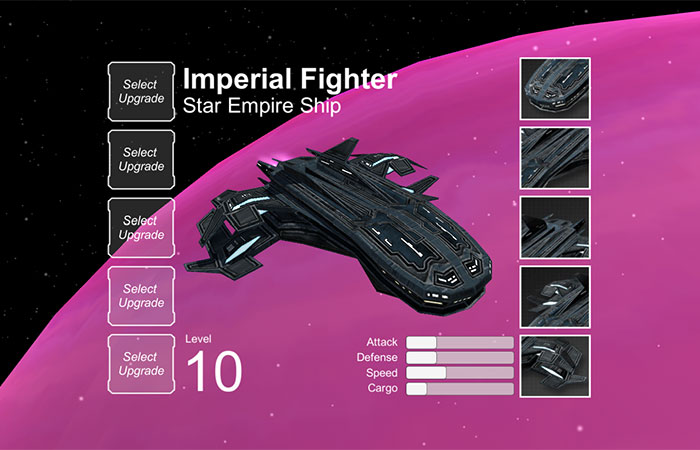

No post anterior fiz o inventário expandir quando o cursor estiver em cima de um slot. Desta vez comecei a adicionar alguns detalhes visuais, além de definir o que cada coluna da interface terá em relação a nave.
Partes da nave
A coluna da direita está dividida em cinto parte: asa esquerda, asa direita, frente, corpo e motor. Cada uma destas partes formarão a nave, possibilitando diversas combinações com diferentes pedaços. Isto também possibilitará a nave ter o mesmo conjunto ou ser totalmente sem padrão. As partes terão diferentes raridades e durabilidades, como uma armadura de um jogo de RPG. Ainda falta definir muitas coisas, mas quero que isto seja customizável e colecionável.

Upgrades da nave
Na coluna da esquerda estarão upgrades e armas que farão a nave ter um poder ofensivo maior, uma defesa maior, uma velocidade maior, entre outras coisas. As partes da nave irão influenciar, por exemplo uma nave com partes grandes será mais lenta do que uma nave com partes menores, e o upgrade de velocidade irá afetar ambas as naves de maneiras diferentes. Ainda não defini quais serão os upgrades, mas a ideia é que cada pedaço e upgrades afetarão o gameplay de uma maneira única (e balanceada, espero!).
Próximos passos
Este post foi mais curto do que os anteriores, não tive muito tempo livre para trabalhar neste projeto por causa de um outro jogo que estou desenvolvendo e uma outra novidade que vou contar em outro post mais pra frente. No próximo post espero ter finalizado o básico dos upgrades para poder integrar a tela de interface no jogo e continuar o desenvolvimento do gameplay.
O andamento do projeto pode ser conferido no GitHub, e neste link você pode ver as alterações no projeto até este post. Todos os posts desta série sobre meu projeto podem ser vistos na tag Final Frontier, e como sempre qualquer sugestão ou opinião é bem vinda!